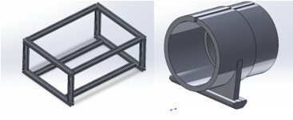
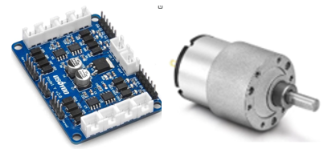
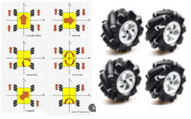
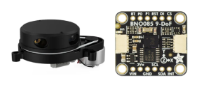
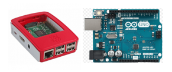
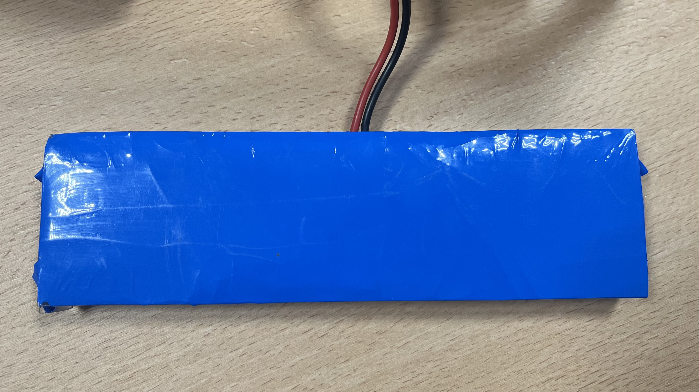
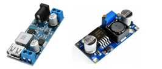

Choix techniques
Châssis et structure mécanique

Nous avons opté pour un châssis en aluminium léger et rigide, offrant un bon compromis entre solidité et poids. La structure a été modélisée sous SolidWorks. Les moteurs sont fixés directement sur le châssis grâce à des supports moteurs imprimés en 3D.
Moteurs

Quatre moteurs à courant continu (JGB 37520) avec encodeurs ont été choisis pour permettre un contrôle précis de la vitesse et de la direction. Nous avons aussi une carte moteur OSOYOO Modèle YV2.0.
Roues

Nous avons opté pour 4 roues mécanums pour permettre une navigation plus optimale de l'AGV.
Capteurs et navigation

Notre AGV intègre plusieurs capteurs : un Lidar x4Pro pour la cartographie et la localisation et une centrale inertielle (IMU BNO085) pour mesurer l'orientation et l'accélération. La fusion des données permet une bonne navigation avec un filtre de Kalman.
Carte de contrôle et programmation

Le cerveau de l'AGV est une carte Raspberry Pi 5 associée à un microcontrôleur Arduino MEGA pour la gestion des moteurs. L'architecture logicielle repose sur un OS Unbuntu sur lequel on utilise ROS2 (Robot Operating System), qui facilite la communication entre les différents nœuds du système.
Alimentation électrique

Une batterie Li-Ion 16,8V offre une autonomie de plus de 30 minutes en charge maximale. Notre batterie est composée de cellules 18650, avec un montage 4S 4P. Chaque cellule a une capacité de 2800 mAh, ce qui nous donne une capacité totale de 11200 mAh. Un système de gestion de batterie (BMS) protège les cellules contre les surcharges et les décharges profondes.
Convertion puissance

Pour alimenter nos cartes, nous avons utilisé deux modules Buck : le premier délivre du 5V 5A pour la Raspberry Pi, et le second délivre du 5V 3A pour l'Arduino.